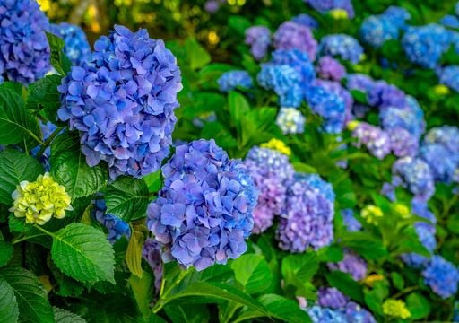

La floricultura en La Perla, Veracruz, es un testimonio de la riqueza de nuestros suelos y el esmero de nuestra gente. Los campos de nuestro municipio destacan por el cultivo de la hortensia, que engalana el paisaje con sus densos racimos de colores vibrantes, y el clavo japonés, cuya delicada estructura y resistencia lo han consolidado como un referente de calidad ornamental. Estas flores no solo embellecen el entorno natural en las faldas del Pico de Orizaba, sino que representan una importante actividad productiva que proyecta la belleza, el trabajo y el talento de los floricultores locales hacia otros mercados.
